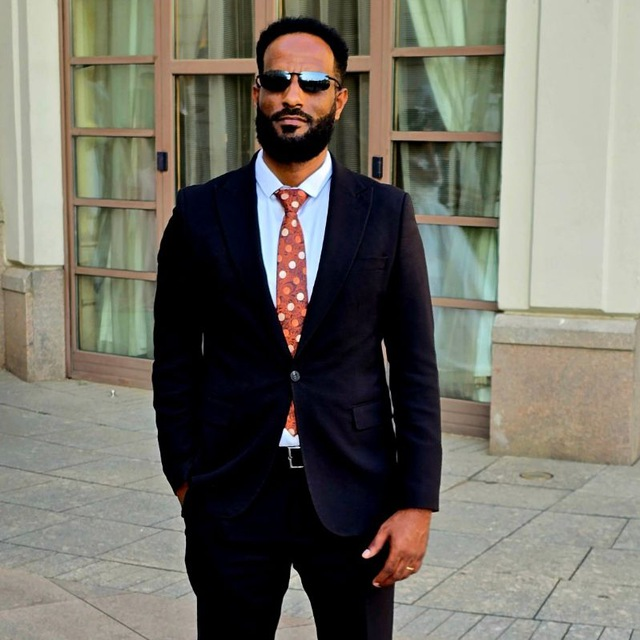
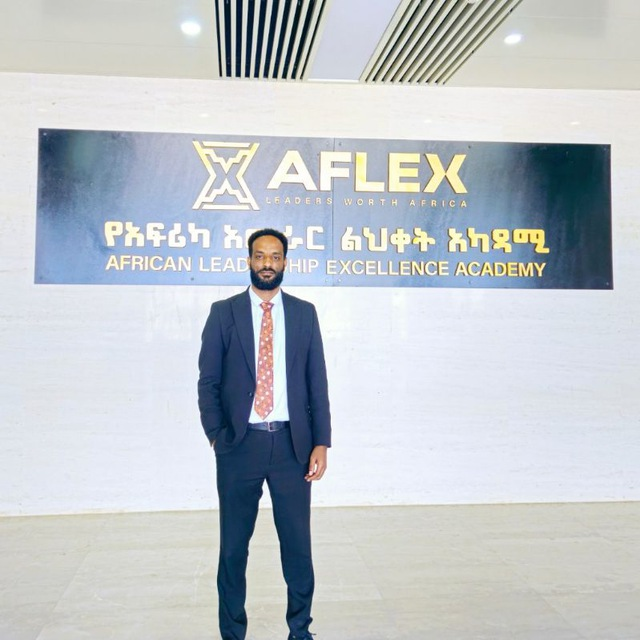
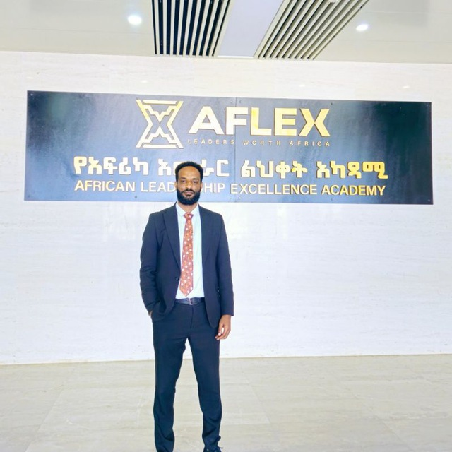
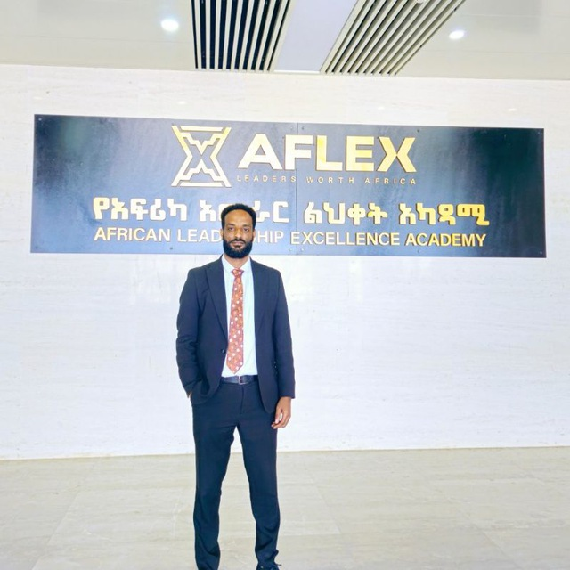
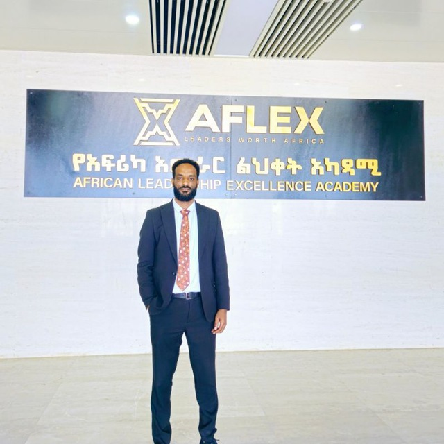

Gallery

 




CLeadership || Strategy & Innovation || Data Science
I am a cybersecurity professional with 2 years of hands-on experience in SOC operations, threat analysis, incident response, and cybersecurity awareness initiatives. I graduated from Raya University in July 2023 with a GPA of 3.89.
Led a red-team simulation to evaluate SOC response and improve threat detection mechanisms.
